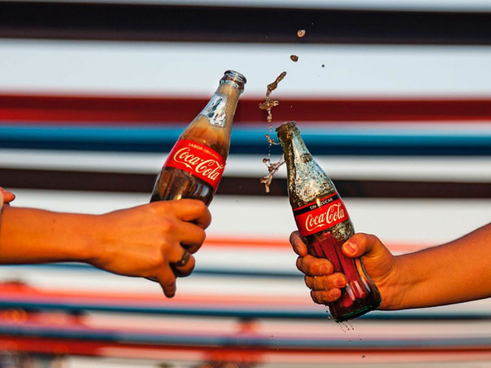

Coca-Cola (conocida comúnmente como Coca en muchos países hispanohablantes; en inglés también conocida como Coke) es una bebida azucarada gaseosa vendida a nivel mundial en tiendas, restaurantes y máquinas expendedoras en más de doscientos países o territorios. Es el principal producto de The Coca-Cola Company, de origen estadounidense. En un principio, cuando la inventó el farmacéutico John Pemberton, fue concebida como una bebida medicinal patentada, aunque fue adquirida posteriormente por el empresario Asa Griggs Candler, que hizo de la bebida una de las más consumidas del siglo xx, y del siglo xxi.
El 8 de mayo de 1886, en la farmacia Jacobs, en Atlanta, el farmacéutico John Stith Pemberton comenzó la comercialización de un jarabe ideado para combatir los problemas de digestión que además aportase energía. Durante los primeros tiempos, vendía cada día alrededor de nueve vasos, a un precio de 5 centavos por vaso. Pemberton no tardó en darse cuenta de que la bebida que había creado podía ser un éxito. Su contable, Frank Robinson, fue quien ideó la marca Coca-Cola y diseñó el logotipo. En 1891 se fundó The Coca-Cola Company, formada por el también farmacéutico Asa G. Candler, su hermano John S. Candler y Frank Robinson. Dos años después registraron la marca en la Oficina de Registro de la Propiedad Industrial de los Estados Unidos
Los anuncios de Coca-Cola siempre se caracterizan por la polémica que causan. Estos spots se caracterizan por incluir alguna música pegadiza, un mensaje profundo o, simplemente, por su larga duración.
